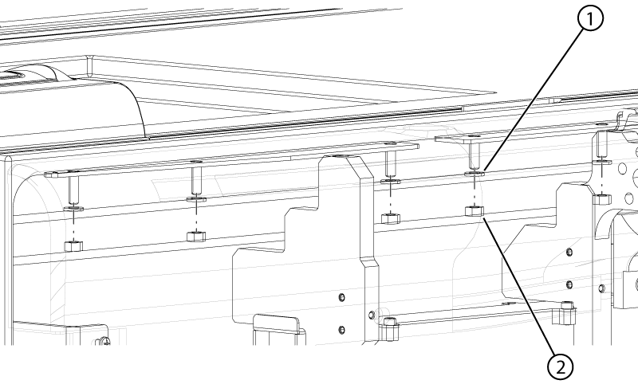
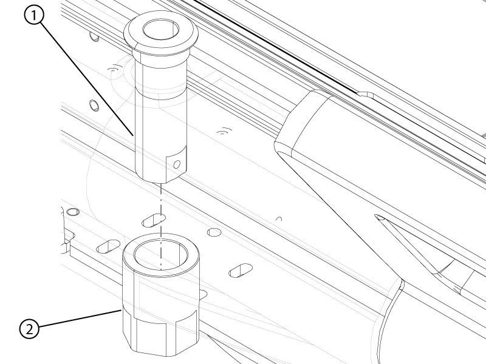
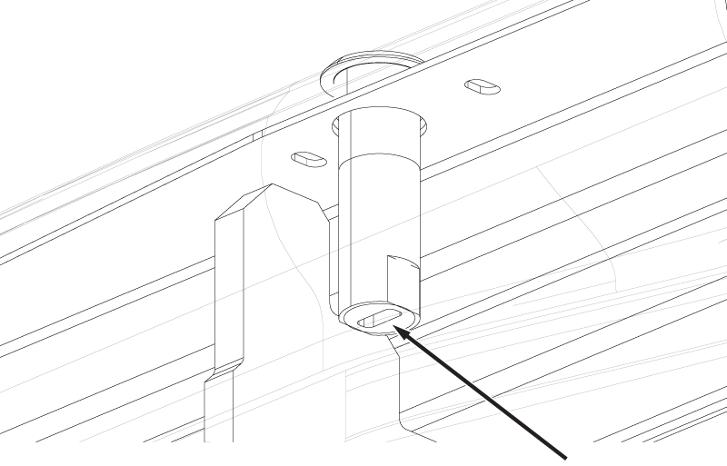
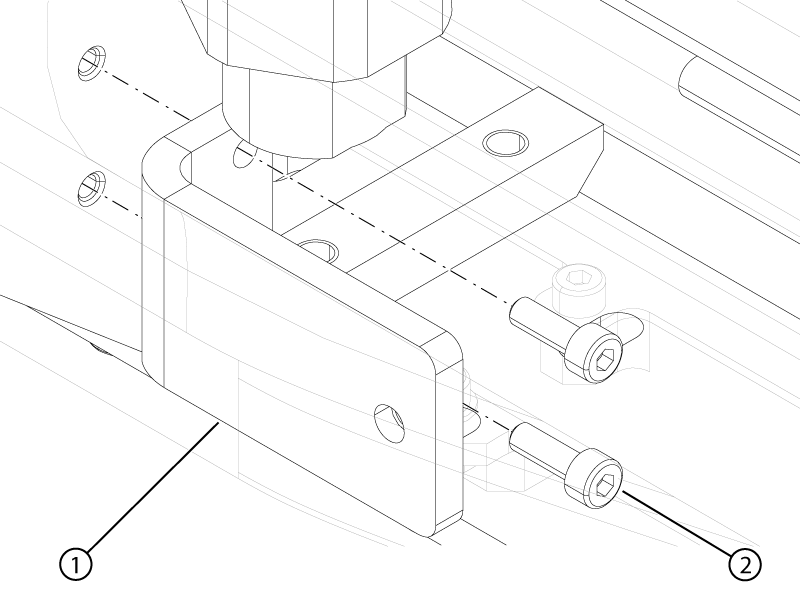
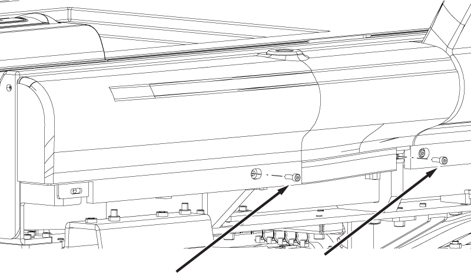
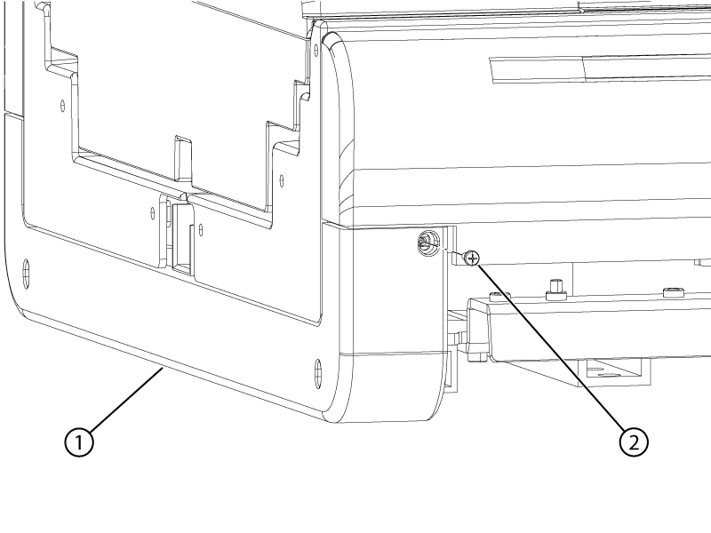

Installs the bore-end bumper onto the left-hand side of the dockable table.
Prerequisites
| Personnel requirements |
|---|
| Required persons | Preliminary requirements | Procedure | Finalization |
|---|
| 1 | - | 15 minutes | - |
| Tools and test equipment |
|---|
| Item | Quantity | Part number | Manufacturer |
|---|
| Nonmagnetic Titanium Service Tool Kit, Large Set | 1 | 5112581 | - |
Procedure
- Install the left-hand bore-end side bumper onto the table.
Important Apply pressure to the bumper during installation to make sure there is no gap between the tabletop and the bumper.
- Connect the touch-and-go assembly connectors to the table wiring.
- Install the five nuts and five washers securing the bumper to the tabletop.
Figure 1. Bumper nuts
- Install the IV bushing into the bumper.
Figure 2. IV bushing
- Install the jam nut onto the IV bushing.
Note The bumper may be stretched slightly to provide better access.
- Insert a flat-head screw driver into the slot of the IV bushing and tighten the jam nut.
Figure 3. IV bushing slot
- If the L-bracket was removed, install the L-bracket and the two screws securing the bracket to the tabletop.
Figure 4. Bumper L-bracket
- Install the two screws securing the side bumper to the table.
Figure 5. Bumper screws
- Install the front lower bumper.
Figure 6. Front lower bumper screw
| 1 | Front lower bumper |
| 2 | Screw |
- Install the two screws securing the lower front bumper to the table.